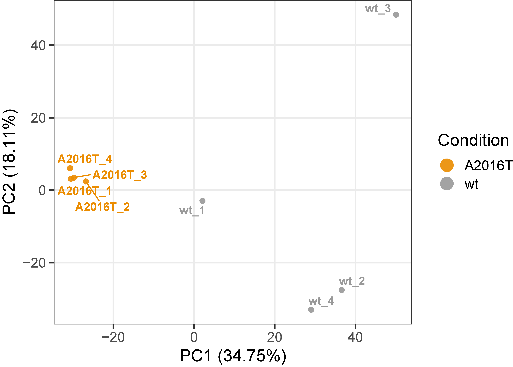
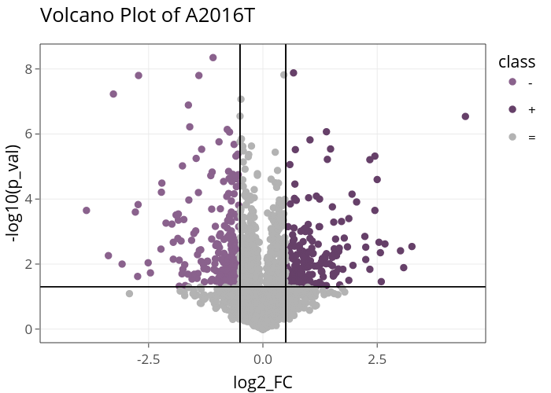
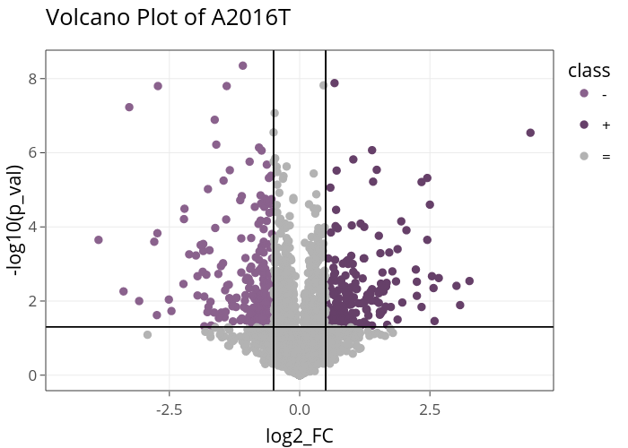

-
1. Workflow of InteracTN
The InteracTN workflow is divided into preprocessing, differential analysis and biological interpretation. During preprocessing, input data are filtered, imputed, normalized, and optionally batch-corrected. Next, differential analysis is performed in parallel at peptide and protein resolution, based on users’ defined comparisons and considering compled designs. Finally, biological interpretation of differentially expressed proteins is performed, including functional enrichment analysis, and detection of communities in protein-protein interaction networks.

01. Define analysis settings and load input data files
InteracTN analyses the results of
- Proteome Discoverer
- MaxQuant
- Spectronaut
- FragPipe
Additional details on the input can be found in section 2. Details on the input parameters and files
02. Normalization and imputation of raw intensities
Intensities are log2 transformed and normalized with DEqMS (Zhu 2022). At the peptide level, the normalization is performed with the function equalMedianNormalization, which normalizes intensity distributions in samples so that they have median equal to 0.
At the protein level, this operation is executed by the function medianSweeping, that applies the same median normalization used for peptides, but also summarizes peptide intensities into protein relative abundances by the median sweeping method.
The principal method is based on the PhosR package (Kim et al. 2021) that performs a complex and well-balanced imputation of the data based on the association between replicates and conditions. As a backup method, InteracTN uses a Gaussian round imputation, for condition with only 1 replicate.
In this step, many figure can be generated regarding information about pre-process, normalization and imputation. An example from the case study is the PCA based on the protein abundances below.
03. Differential analysis
Differential analysis is applied to both proteins and peptides, to identify significant differences. Two slightly different methodologies are applied: the DEqMS package (Zhu 2022),is used for proteins. DEqMS is developed on top of Limma, but the method estimates different prior variances for proteins quantified by different numbers of PSMs/peptides per protein, therefore achieving better accuracy.For single peptides, the Limma package is used (Ritchie et al. 2015).
-
Compile the comparison table: The table have 2 columns:
- Formule column (
REQUIRED): The formulas need to follow the syntax of Limma (Ex: "cancer-normal"). - Name column (
OPTIONAL): personalized name assign to the comparison. (Ex: "cancer_vs_normal")
- Formule column (
Limma and DEqMS calculate differentially expressed peptides and proteins (DEPs) for each comparison specified in the design file parameter. Each peptide or protein can be selected as differential based on different parameters: the log2 Fold Change, the P.Value, the adjusted P.Value and the log2 expression. In InteracTN, a protein/peptide is significant if passing thresholds on these parameters, set by the user. A protein/peptide for each comparison can be Up-regulated. It is Up-regulated if:
-
the log2 FC is higher than the Fold Change threshold (FC > Log2 FC thr),
-
the Adj.P.Value or P.Value is lower than the threshold (P.Value < P.Value thr),
In the output, for each comparison, this distinction is reported in the “class” column, which assumes value “+” if is up-regulated and “=” if it is not significant.
Various figures are generated, first a bar plot that graphically represents the DEPs identified. Followed by comparison-specific volcano plots.
 

04. Report creation and download of the results
Results are summarized in a web-page HTML report. Other than this, InteracTN generates a large number of useful files: a description of each output file can be found in section 4. Details on the output files. All the files are group in a zip file and downloaded.
.png)
ADDITIONAL STEPS:
B1. Batch Effect correction
If required by the experiment, a batch correction step can be applyed using proBatch (Cuklina et al. 2018). The batches need to be defined in the sample annotation file where an additional column describe the batches. required.
E1. Enrichment analysis of the Differentially Expressed Proteins
The biological interpretation of the Differentially Expressed Proteins starts with the enrichment step. To execute this analysis, InteracTN uses EnrichR (Jawaid 2022), a popular tool that searches on a large number of data sets to obtain information about many functional categories. EnrichR organises its hundreds of data sources in 8 sections: Transcription, Pathways, Ontologies, Diseases/Drugs, Cell Types, Misc, Legacy, and Crowd.

Each comparison defined in the differential analysis stage can result in 1 sets of proteins: the Up-regulated (called Up). InteracTN provides for each term statistical parameters like P.Value, fdr, odds ratio, overlap size.
InteracTN creates an RData of the complete enrichment data frame, allowing the user an easy import in R to perform further analysis. InteracTN also generates an Excel file, containing only the significantly enriched terms, as defined by user settings.
A term to be significative need to have:
-
a Fdr or P.Value lower of P.Value thr for enrichment (P.Value < P.Value thr for enrichment),
-
an Overlap Size higher than Overlap size thr for enrichment (Overlap Size > Overlap size thr for enrichment).
InteracTN displays top significant enrichments based on specific annotation datasets or keywords selected by the user.

N1. Protein-Protein Interaction network analysis of Differentially Expressed Proteins
InteracTN performs Protein-Protein Interaction (PPI) network analysis on differentially expressed proteins. PPIs are essential in almost all processes of the cell, and crucial for understanding cell physiology in different states. For each comparison, InteracTN analyses the interaction between the DEPs using STRING (Szklarczyk et al. 2021).

The species-specific database is retrieved from the STRING server, and all the interactions above a user-defined threshold are used to generate a network with